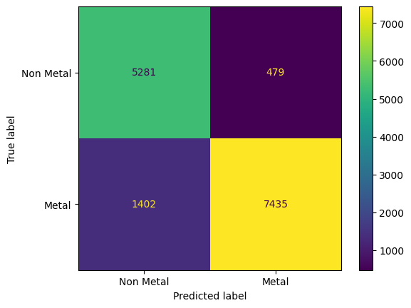

Application: Bandgap Prediction#
Data Features#
Loading the Dataset#
Show code cell source
import pandas as pd
# load dataset into a pandas DataFrame:
BANDGAP_CSV = 'bandgaps.csv'
data_df = pd.read_csv(BANDGAP_CSV)
# show dataframe in notebook:
display(data_df)
| mp_id | formula | composition | crystal_system | symmetry_symbol | volume | density | e_fermi | formation_energy_per_atom | band_gap | bandgap_direct | |
|---|---|---|---|---|---|---|---|---|---|---|---|
| 0 | mp-1005 | FeP | {'Fe': 1, 'P': 1} | Orthorhombic | Pnma | 90.583862 | 6.366076 | 9.163143 | -0.598423 | 0.0000 | False |
| 1 | mp-1006367 | Ce2HfSe5 | {'Ce': 2, 'Hf': 1, 'Se': 5} | Orthorhombic | Pnma | 785.754385 | 7.215011 | 6.181067 | -1.941463 | 0.0000 | False |
| 2 | mp-1001606 | LuFeC2 | {'Lu': 1, 'Fe': 1, 'C': 2} | Orthorhombic | Amm2 | 45.919844 | 9.215206 | 5.530327 | -0.286076 | 0.0000 | False |
| 3 | mp-1001613 | LuGa | {'Lu': 1, 'Ga': 1} | Orthorhombic | Cmcm | 87.819318 | 9.253483 | 3.090952 | -0.608621 | 0.0000 | False |
| 4 | mp-1008624 | YBiPd | {'Y': 1, 'Bi': 1, 'Pd': 1} | Cubic | F-43m | 74.987877 | 8.952998 | 5.397804 | -0.961384 | 0.0000 | False |
| ... | ... | ... | ... | ... | ... | ... | ... | ... | ... | ... | ... |
| 29190 | mp-555534 | K4MnMo4O15 | {'K': 4, 'Mn': 1, 'Mo': 4, 'O': 15} | Trigonal | P-3 | 808.366683 | 3.430836 | 0.147938 | -2.154358 | 2.9808 | False |
| 29191 | mp-23703 | LiH | {'Li': 1, 'H': 1} | Cubic | Fm-3m | 16.207758 | 0.814396 | -0.997677 | -0.495530 | 2.9810 | True |
| 29192 | mp-561093 | Rb2Cr2O7 | {'Rb': 2, 'Cr': 2, 'O': 7} | Monoclinic | P2_1/c | 793.897416 | 3.237203 | -1.868672 | -1.934791 | 2.9814 | True |
| 29193 | mp-16180 | Na6S2O9 | {'Na': 6, 'S': 2, 'O': 9} | Cubic | Fm-3m | 218.925628 | 2.624871 | 1.735700 | -2.095472 | 2.9814 | False |
| 29194 | mp-557108 | Ba2Nb2TeO10 | {'Ba': 2, 'Nb': 2, 'Te': 1, 'O': 10} | Orthorhombic | Pbca | 943.682404 | 5.265263 | 1.411631 | -2.859859 | 2.9816 | False |
29195 rows × 11 columns
Show code cell source
# Generate a list of elements in the dataset:
ELEMENTS = set()
for v in data_df['composition'].values:
ELEMENTS |= set(eval(v).keys())
ELEMENTS = sorted(ELEMENTS)
# Generate a list of the crystal systems in the dataset:
CRYSTAL_SYSTEMS = sorted(set(data_df['crystal_system']))
# print the sizes of ELEMENTS and CRYSTAL_SYSTEMS
print('Number of elements:', len(ELEMENTS))
print('Number of crystal systems:', len(CRYSTAL_SYSTEMS))
Number of elements: 86
Number of crystal systems: 7
import numpy as np
def vectorize_composition(composition, elements):
""" converts an elemental composition dict to a vector. """
total_n = sum(composition.values())
vec = np.zeros(len(elements))
for elem, n in composition.items():
if elem in elements:
vec[elements.index(elem)] = n/total_n
return vec
def vectorize_crystal_system(crystal_system, systems):
""" converts a crystal system to a vector. """
vec = np.zeros(len(systems))
if crystal_system in systems:
vec[systems.index(crystal_system)] = 1.0
return vec
Show code cell source
# generate an example of a composition vector:
test_comp = {'Si': 1, 'O': 2}
print('Example of a composition vector:')
print(vectorize_composition(
test_comp,
elements=['C', 'O', 'Si']))
# generate an example of a crystal system vector:
test_system = 'Hexagonal'
print('Example of a crystal system vector:')
print(vectorize_crystal_system(
test_system,
systems=['Cubic', 'Hexagonal']))
Example of a composition vector:
[0. 0.66666667 0.33333333]
Example of a crystal system vector:
[0. 1.]
def parse_data_vector(row):
""" parses x and y vectors from a dataframe row """
# parse whether or not the bandgap is direct:
bandgap_direct = 1.0 if row['bandgap_direct'] == 'True' else -1.0
# parse the composition dict:
composition_dict = eval(row['composition'])
# parse feature vector (x):
x_vector = np.concatenate([
vectorize_composition(composition_dict, ELEMENTS),
vectorize_crystal_system(row['crystal_system'], CRYSTAL_SYSTEMS),
np.array([ row['volume'] ]),
np.array([ row['density'] ]),
np.array([ row['formation_energy_per_atom'] ]),
])
# parse label vector (y):
y_vector = np.concatenate([
np.array([ row['band_gap'] ]),
np.array([ bandgap_direct ])
])
return x_vector, y_vector
Show code cell source
# parse x and y vectors from dataframe rows:
data_x, data_y = [], []
for i, row in data_df.iterrows():
x_vector, y_vector = parse_data_vector(row)
data_x.append(x_vector)
data_y.append(y_vector)
# convert x and y to numpy arrays:
data_x = np.array(data_x)
data_y = np.array(data_y)
print('data_x shape:', data_x.shape)
print('data_y shape:', data_y.shape)
data_x shape: (29195, 96)
data_y shape: (29195, 2)
from sklearn.preprocessing import StandardScaler
from sklearn.model_selection import train_test_split
def train_val_test_split(data_x, data_y, split=(0.8,0.1,0.1)):
""" splits data into train, validation, and test sets. """
# split train and nontrain data:
train_x, nontrain_x, train_y, nontrain_y = \
train_test_split(
data_x, data_y, train_size=split[0]/sum(split))
# split validation and test data:
val_x, test_x, val_y, test_y = \
train_test_split(
data_x, data_y,
test_size=split[2]/(split[1]+split[2]))
return (train_x, val_x, test_x), \
(train_y, val_y, test_y)
def normalize(train_x, val_x, test_x):
""" normalizes a dataset. """
scaler = StandardScaler()
train_z = scaler.fit_transform(train_x)
val_z = scaler.transform(val_x)
test_z = scaler.transform(test_x)
return scaler, train_z, val_z, test_z
Classifying Metals and Non-Metals#
from sklearn.linear_model import RidgeClassifier
from sklearn.metrics import confusion_matrix, ConfusionMatrixDisplay
import matplotlib.pyplot as plt
metals_y = np.array([ 1.0 if y[0] <= 0 else -1 for y in data_y])
metal_subsets_x, metal_subsets_y = \
train_val_test_split(data_x, metals_y)
train_x, val_x, test_x = metal_subsets_x
train_y, val_y, test_y = metal_subsets_y
scaler, train_z, val_z, test_z = \
normalize(train_x, val_x, test_x)
model = RidgeClassifier(alpha=20)
model.fit(train_z, train_y)
train_yhat = model.predict(train_z)
val_yhat = model.predict(val_z)
# compute accuracy:
cm = confusion_matrix(val_y, val_yhat)
accuracy = np.sum(np.diag(cm)) / np.sum(cm)
# display confusion matrix:
disp = ConfusionMatrixDisplay(confusion_matrix=cm,
display_labels=model.classes_)
disp.plot()
plt.gca().set_yticklabels(['Non Metal', 'Metal'])
plt.gca().set_xticklabels(['Non Metal', 'Metal'])
plt.show()

Estimating the Bandgap of Non-Metals:#
Show code cell source
bandgap_x = data_x[data_y[:,0] > 0]
bandgap_y = data_y[(data_y[:,0] > 0),0]
#direct_gap_y = data_y[(data_y[:,0] > 0),1]
print('bandgap_x shape:', bandgap_x.shape)
print('bandgap_y shape:', bandgap_y.shape)
bandgap_x shape: (11464, 96)
bandgap_y shape: (11464,)
Ridge Regression Model:#
Show code cell source
from sklearn.linear_model import Ridge
bandgap_subsets_x, bandgap_subsets_y = \
train_val_test_split(bandgap_x, bandgap_y)
train_x, val_x, test_x = bandgap_subsets_x
train_y, val_y, test_y = bandgap_subsets_y
scaler, train_z, val_z, test_z = \
normalize(train_x, val_x, test_x)
ridge_model = Ridge(alpha=0.01)
ridge_model.fit(train_z, train_y)
train_yhat = ridge_model.predict(train_z)
val_yhat = ridge_model.predict(val_z)
train_mse = np.mean((train_yhat - train_y)**2)
val_mse = np.mean((val_yhat - val_y)**2)
print('training stddev:', np.std(train_y))
print('training MSE:', train_mse)
print('validation MSE:', val_mse)
print('validation MSE/stddev:', val_mse/np.std(train_y))
training stddev: 0.8627177593119147
training MSE: 0.4446051051365285
validation MSE: 0.44062123944183823
validation MSE/stddev: 0.5107362572358176
Nearest Neighbor Regression Model#
Show code cell source
from sklearn.neighbors import KNeighborsRegressor
nn_model = KNeighborsRegressor(n_neighbors=5,
weights='distance',
algorithm='ball_tree')
nn_model.fit(train_z, train_y)
train_yhat = nn_model.predict(train_z)
val_yhat = nn_model.predict(val_z)
train_mse = np.mean((train_yhat - train_y)**2)
val_mse = np.mean((val_yhat - val_y)**2)
print('training stddev:', np.std(train_y))
print('training MSE:', train_mse)
print('validation MSE:', val_mse)
print('validation MSE/stddev:', val_mse/np.std(train_y))
training stddev: 0.8627177593119147
training MSE: 0.0
validation MSE: 0.08830646421241149
validation MSE/stddev: 0.10235846342475069
Exercises#
Exercise 1: Classifying Direct vs. Indirect Bandgaps
direct_gap_x = data_x[data_y[:,0] > 0]
direct_gap_y = data_y[(data_y[:,0] > 0),1]
print('direct_gap_x shape:', direct_gap_x.shape)
print('direct_gap_y shape:', direct_gap_y.shape)
Solutions:#
Exercise 1: Classifying Direct vs. Indirect Bandgaps#
Show code cell content
import numpy as np
from sklearn.svm import NuSVC
import matplotlib.pyplot as plt
direct_gap_x = data_x[data_y[:,0] > 0]
direct_gap_y = data_y[(data_y[:,0] > 0),1]
print('direct_gap_x shape:', direct_gap_x.shape)
print('direct_gap_y shape:', direct_gap_y.shape)
direct_gap_x shape: (11464, 96)
direct_gap_y shape: (11464,)